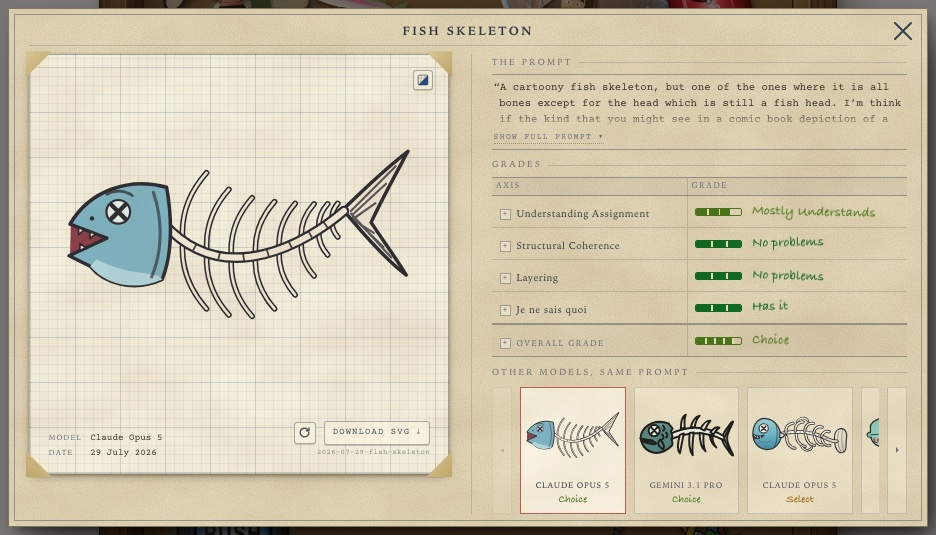

mockup 40 · rev. 2 · 2026-09-13 · not built · PLAN-PORTFOLIO §2 §4 §5 · live junk-drawer.css
Revision 2 (owner, same day: “use the same style and stuff I have for the original one — why are we redoing the specimen cards?”). Nothing is restyled. The page links the live junk-drawer.css; the right column IS the art page’s field notes (.jd-notes, the wall label, the intro, the legend as data.php renders it), set beside the drawer instead of under it and sticky on desktop. The numbers are the analytics folder’s own cards — what a drawing costs, overall grade, the four axes — rendered by the folder on 2026-09-13 and lifted out of the manila folder into the column, so the drawer no longer needs the folder object. The report card is untouched: it opens exactly as today (third frame, captured live). The instructions slip is gone — its four lines are the intro paragraph. The PUSH 4 MORE JUNK button and the pull stay in the drawer. Synthetic: the drawer is a still (the built page composes the real stage); the turn table below the fold is the folder’s, as rendered. Still open from §A: the name, the two-model pair policy, the license line; the intro says “two models” on the plan’s say-so.
desktop — 1240 × 840 viewport (scroll inside to feel the sticky column)
the same page, full height — the notes below the composition
the report card — unchanged, as it opens on the live drawer today (fish skeleton, captured 2026-09-13)
